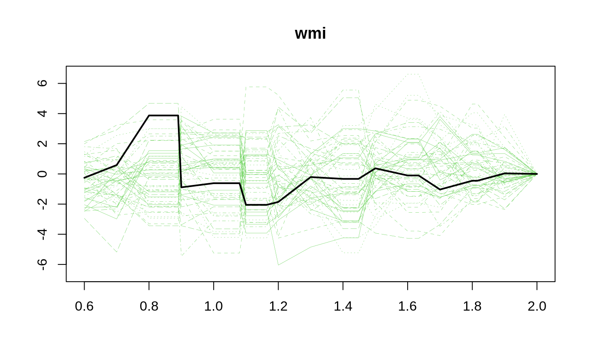
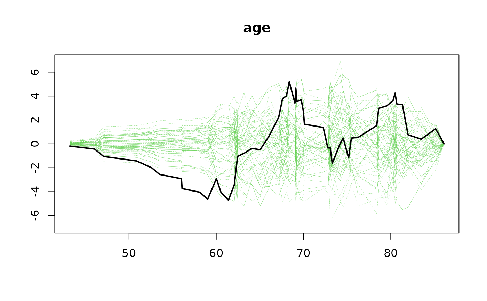

That is, computes $$ U(z,\tau) = \int_0^\tau M(z)^t d \hat M $$ and resamples its asymptotic distribution.
Usage
gofZ.phreg(
formula,
data,
vars = NULL,
offset = NULL,
weights = NULL,
breaks = 50,
equi = FALSE,
n.sim = 1000,
silent = 1,
...
)Arguments
- formula
formula for cox regression
- data
data for model
- vars
which variables to test for linearity
- offset
offset
- weights
weights
- breaks
number of breaks for cumulatives in covarirate direction
- equi
equidistant breaks or not
- n.sim
number of simulations for score processes
- silent
to keep it absolutely silent, otherwise timing estimate will be prduced for longer jobs.
- ...
Additional arguments to lower level funtions
Details
This will show if the residuals are consistent with the model evaulated in the z covariate. M is here chosen based on a grid (z_1, ..., z_m) and the different columns are \(I(Z_i \leq z_l)\). for \(l=1,...,m\). The process in z is resampled to find extreme values. The time-points of evuluation is by default 50 points, chosen as 2
The p-value is valid but depends on the chosen grid. When the number of break points are high this will give the orginal test of Lin, Wei and Ying for linearity, that is also computed in the timereg package.
Examples
library(mets)
data(TRACE)
set.seed(1)
TRACEsam <- blocksample(TRACE,idvar="id",replace=FALSE,100)
## cumulative sums in covariates, via design matrix mm
## Reduce Ex.Timings
m1 <- gofZ.phreg(Surv(time,status==9)~strata(vf)+chf+wmi+age,data=TRACEsam)
summary(m1)
#> Cumulative residuals versus modelmatrix :
#> Sup_z |U(tau,z)| pval
#> wmi 3.875974 0.397
#> age 5.185779 0.269
plot(m1,type="z")

